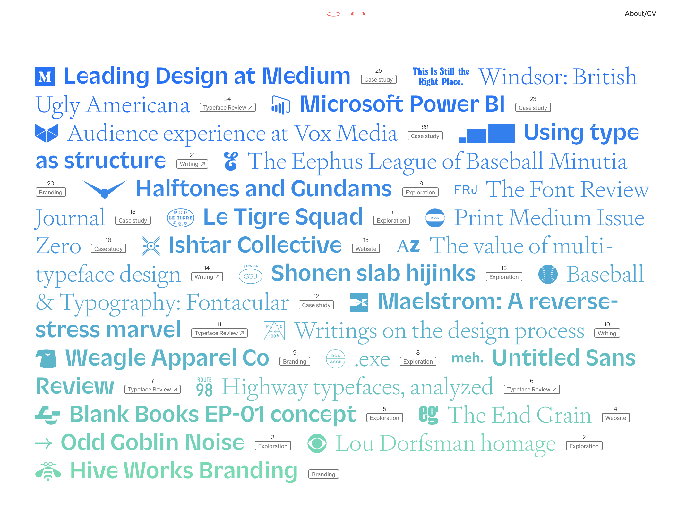

Linked is the portfolio website of Bethany Hack, a designer and writer. Featured on
Hack's homepage are the titles of different case studies, branding projects, and
writings that she has worked on during her multidisciplinary career. The titles follow
a blue to green ombre as users scroll down the page and I find the color scheme to
be very calming and inviting. The different weights and icons that Hack chooses to
use add dimension to the site and make it a lot more interesting to look at. I am
intrigued by the simplicity of the site as well as all the different elements that are
present and I find that having only the titles showing on the homepage adds an air
of mystery so I want to click on the individual titles to learn more about Heck's
different works. This site tells me that Heck has worked on a wide variety of projects
and that her skill-set is not confined to just design. I like the visuals of this
site and find it to be inspiring as I would like to create something simple for my own
portfolio website.
click image for link to site
